Adding Filters
In Desigo CC, there are default filters for all geographic directions. After adding to the graphic, the default filter is configured as per project requirements.
- In the Mode group, conduct one of the following actions:
- Click Design
 . Previously rotated objects appear in the default direction.
. Previously rotated objects appear in the default direction. - (Optional) Click Test
 . In this case, the filter does not display in its true size.
. In this case, the filter does not display in its true size. - In System Browser, select logical view.
- Select Logical > [Network name] \...\ [Plant] >
- [FilEh (exhaust air filter)]
- [FilEx (extract air filter)]
- [FilOa (outside air filter)]
- [FilRc (recirculated air filter)]
- [FilSu (supply air filter)]
- Drag the object to the graphics page.
- The added object is displayed in its true size
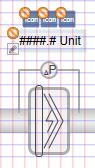
.
Rotating
- The fan symbol is added to the graphic.
- In the Mode group, click Test.
- Select the filter symbol.
- Left-click and hold, then right-click until the filter symbol displays in the desired direction.
- Release the left mouse button.
- The filter symbol is displayed in the desired direction.
Direction of the Pressure Sensor on the Filter | ||||
Direct Entry of Direction under Symbol Properties > Substitution > Direction | ||||
0 | 1 | 2 | 3 | 4 |
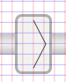 | 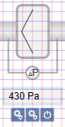 | 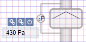 | 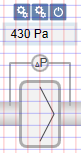 | 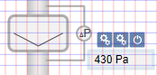 |
- Enter the air direction in the Filter Direction field:
Determining Air Direction | |
Direct Entry of Direction under Symbol Properties > Substitution > Filter Direction | |
0 = Air direction right or upward | 1 = Air direction left or downward |
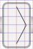 | 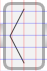 |

NOTE:
In drawing mode, the filter is always displayed in the default state.
Changing Symbol Type
In the Filter Type field, enter a number from 0 through 3.
Filter Style | |||
Direct Entry of Direction under Symbol Properties > Substitution > Filter Type | |||
0 | 1 | 2 | 3 |
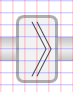 | 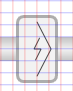 | 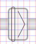 | |
Configuring Analog Display
As an option, you can configure the frame, display precision, and unit for the analog display.
- In the Display Box field, enter a number from 0 through 1.
- 0 = No frame displays.
- 1 = Frame display.
- In the Precision field, enter a number from 0 through 5.
- 0 = No decimal points display.
- 1‒5 = Displays number of decimal points as per entry from 1 through 5.
- In the Units fields, enter the unit. The unit is displayed by value.
NOTE: A manually entered value overwrites the imported unit.